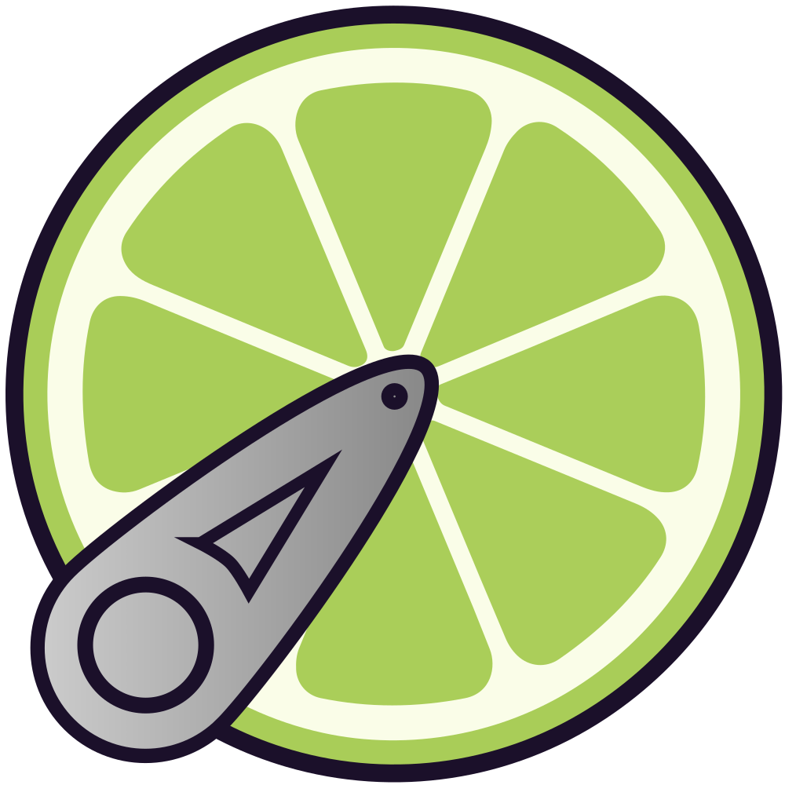
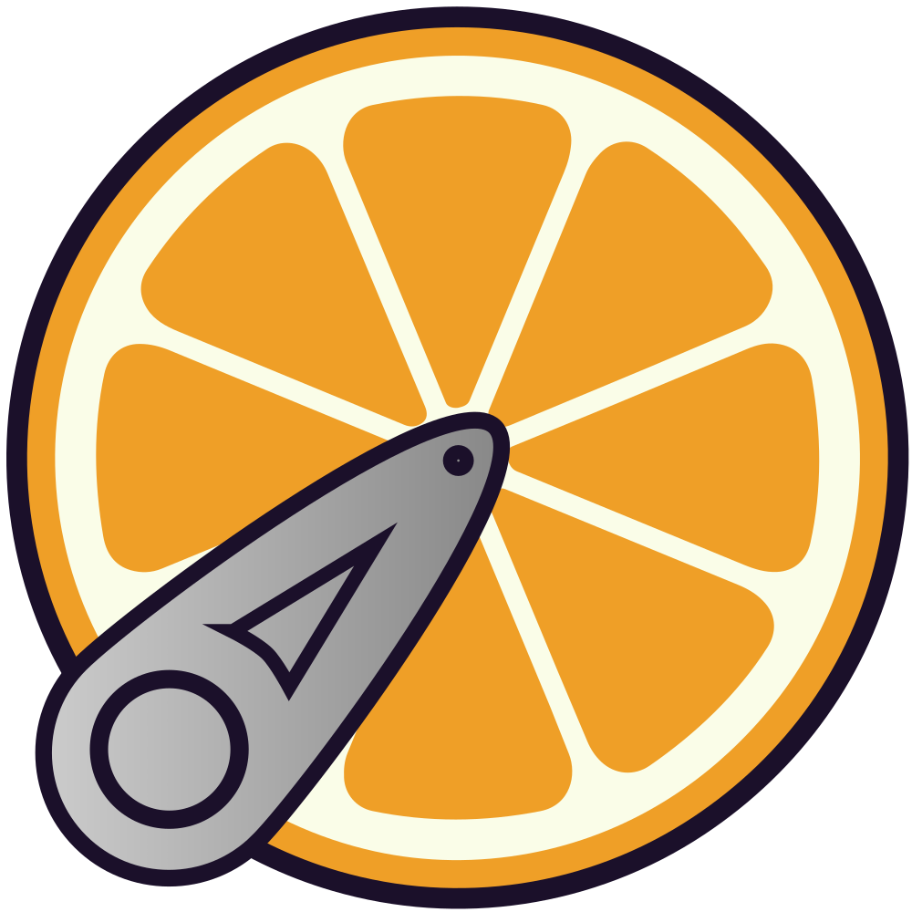
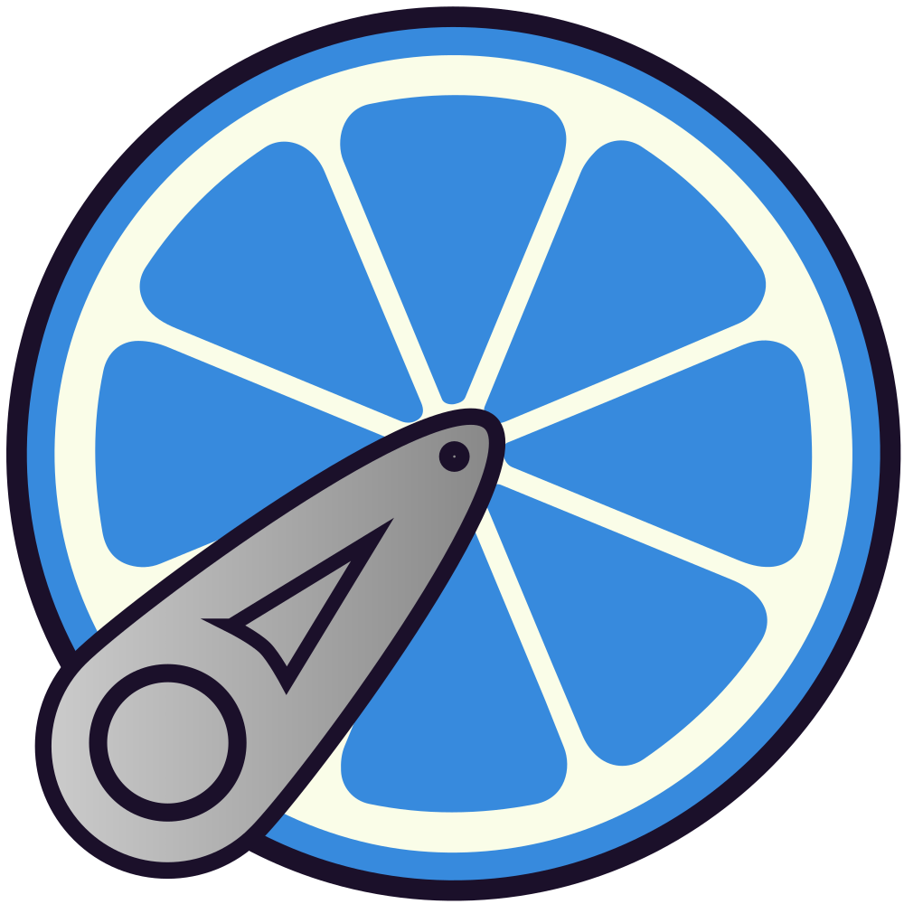
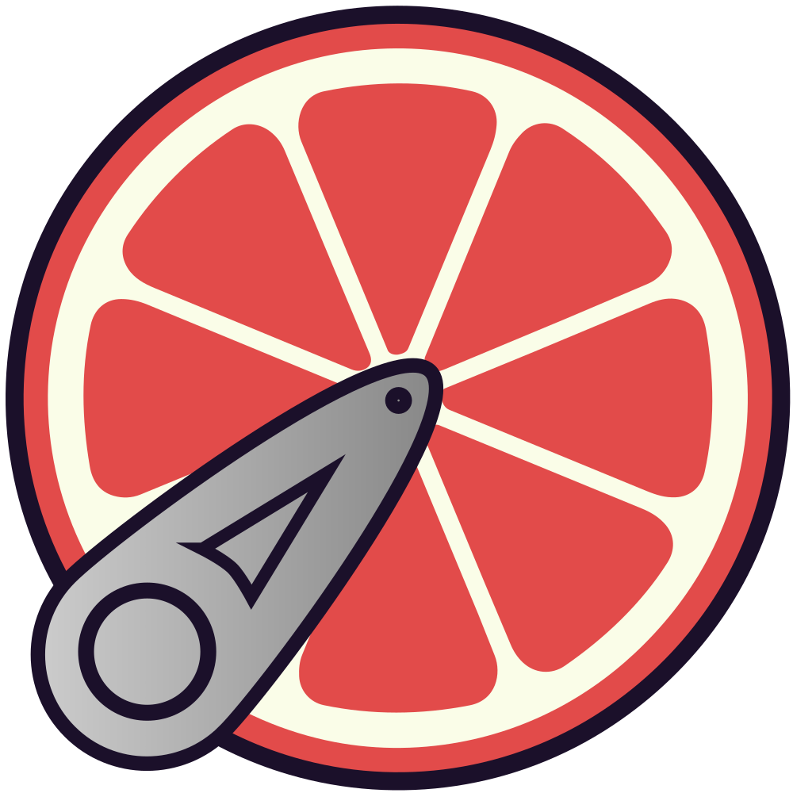

For indie filmmakers and small post teams
The open-source alternative to Suite, Shade, and LucidLink.
The mounted-drive workflow those subscriptions sell, without the subscription: a real volume in Finder at 10 GbE speed, Dropbox-style resilience when the network drops, on hardware you already own. $0 per seat, no storage contract.
Open source · macOS 14+ · runs against your own server (TrueNAS, Synology, any Docker box)
- 7 Gbit/s sustained on a 10 GbE LAN — author-measured
- 100 GB scrub a clip this size; only the blocks you touch stream
- $0/seat Apache-2.0 — bring your own hardware
It's a real mount.
Your server shows up in Finder the way a drive does — because to macOS, it is one. Watch it mount.
Favorites
- Recents
- Desktop
- Movies
Locations
- Mac Studio
- zpool
- Network
It mounts at /Volumes/zpool — a real path.
Premiere and Resolve link media by path.
Your teammate mounts the same volume: same paths. Nobody relinks.
It works like Dropbox where that helps — background uploads, a local cache, offline files — but it is a mount, which Dropbox is not. Premiere and Resolve treat /Volumes/zpool like a local drive: no sync folder, no placeholders, no import step. And because every Mac sees the same paths, a teammate's .prproj or .drp opens with media online — nobody spends the morning relinking.
UI mock — file names and sizes are illustrative; the mount behavior is the product.
The menu bar tells the truth.
JuiceMount is a menu-bar app, and the mark is the status system: one glance says what your storage is doing; the popover has the numbers. These are the marks the app actually ships.

green healthy ·

amber degraded ·
blue offline files ·
red fault — four colors are the whole status system. You always know what your storage is doing, without opening a dashboard or reading a log.Numbers in this popover are illustrative — the real one shows yours. Fault red is the state you should rarely see: it means the volume needs you.
Speed, resilience, and ownership — without picking two
Storage SaaS streams blocks but bills forever. Self-hosted sync owns the bytes but moves whole files. Plain NFS is fast and dumb. JuiceMount is the missing combination.
Fast because it's your LAN
Roughly 7 Gbit/s in both directions on a 10 GbE LAN, author-measured — the same wire where sync-class tools capped near 1 Gbit/s in the same tests. Cached reads come off local SSD at 226–571 MB/s; a 100 K-file library opens folders in 15–120 ms.
Built for the day the network is gone
Pin a project and keep cutting on a plane. In offline mode, un-pinned reads refuse in 4–67 ms instead of hanging Finder on a 30 s NFS retry. The opt-in write spool acks renders on local SSD and trickle-uploads in the background, SHA-256-verified at every hop.
Software is free; the hardware is yours
JuiceMount is open source, Apache-2.0. Suite charges $75/TB/mo managed — or $40/TB/mo to mount a bucket you already own (checked June 2026). A one-time box beats a forever bill sooner than you'd think.
Performance figures are the author's measurements on his own Apple-Silicon Mac ↔ TrueNAS rig, not independent benchmarks — methodology, workload scripts, and the regression harness are public.
How it works
Your NLE talks to a normal Finder volume. Behind it, the hot path stays local: a Finder-tuned NFS server on localhost, an SQLite metadata cache, an SSD block cache with pinning and a write spool, and a JuiceFS client that keeps file data as plain S3 objects in MinIO on your box — metadata in Redis.
![Architecture: Finder, Resolve, or Premiere open files on /Volumes/(name), mounted by the macOS NFS client from the JuiceMount NFS server running in the app on localhost. Three satellites keep the hot path local: an SQLite mirror answers Finder listings, an SSD cache with pins serves cached reads at SSD speed, and a write spool acks writes locally then trickles them up. Behind the app, a hidden JuiceFS FUSE mount crosses your LAN or WAN to your server, where MinIO or any S3 holds file data as plain objects and Redis holds file metadata. Reads stream only the blocks you touch; writes drain in the background at line speed. Both sides are hardware you own.](../assets/arch-diagram-dark.svg)
Architecture notes, including the security model, live in the repo
What it's not (yet)
JuiceMount is not a team-wide, multi-department collaboration platform. No review pages or approvals, no AI media search (filename search is instant today; content-aware search is roadmap), no Windows client — macOS only, and you run the server. One caveat from the README worth repeating: identical paths on every Mac is the designed multi-machine workflow, but heavy simultaneous multi-editor use hasn't been soak-tested yet.
What it is: the indie filmmaker and small-post-team tool — the raw performance of the Suite / Shade / Iconik / LucidLink category, none of the cost, on hardware you can tinker with.
Your bytes are your bytes.
JuiceMount mounts your own server as a Finder volume that behaves like LucidLink and costs like a NAS: scrub 100 GB files over the network touching only the blocks you play, pin projects for offline, write at local-SSD speed while uploads trickle in the background. No per-seat fee. No per-TB fee. No storage contract. Your hardware.
S3 and cloud collaboration have their place — this changes the cost equation for small teams so speed doesn't force inferior infrastructure.